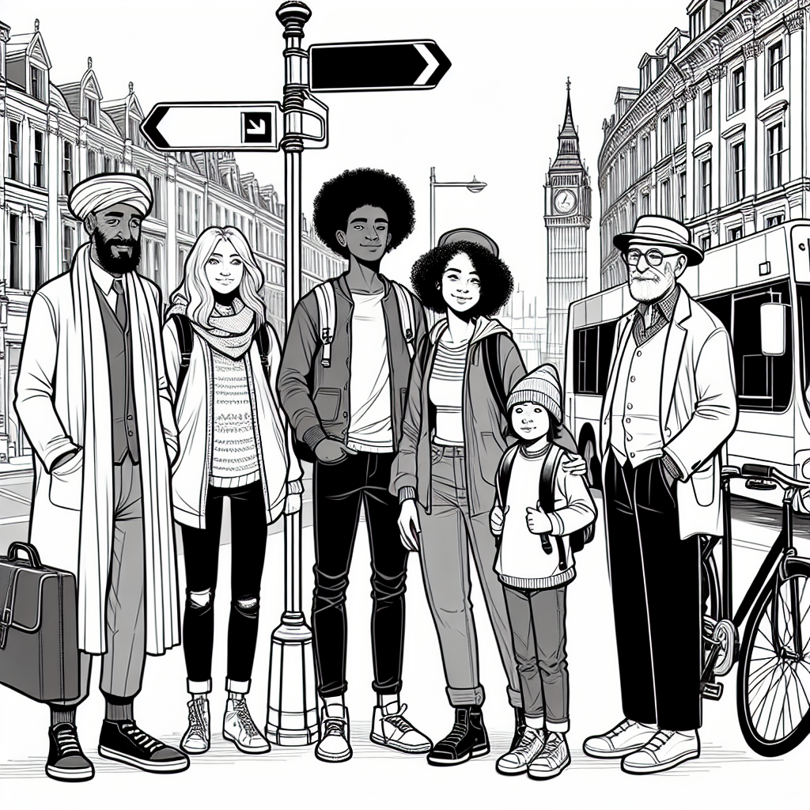
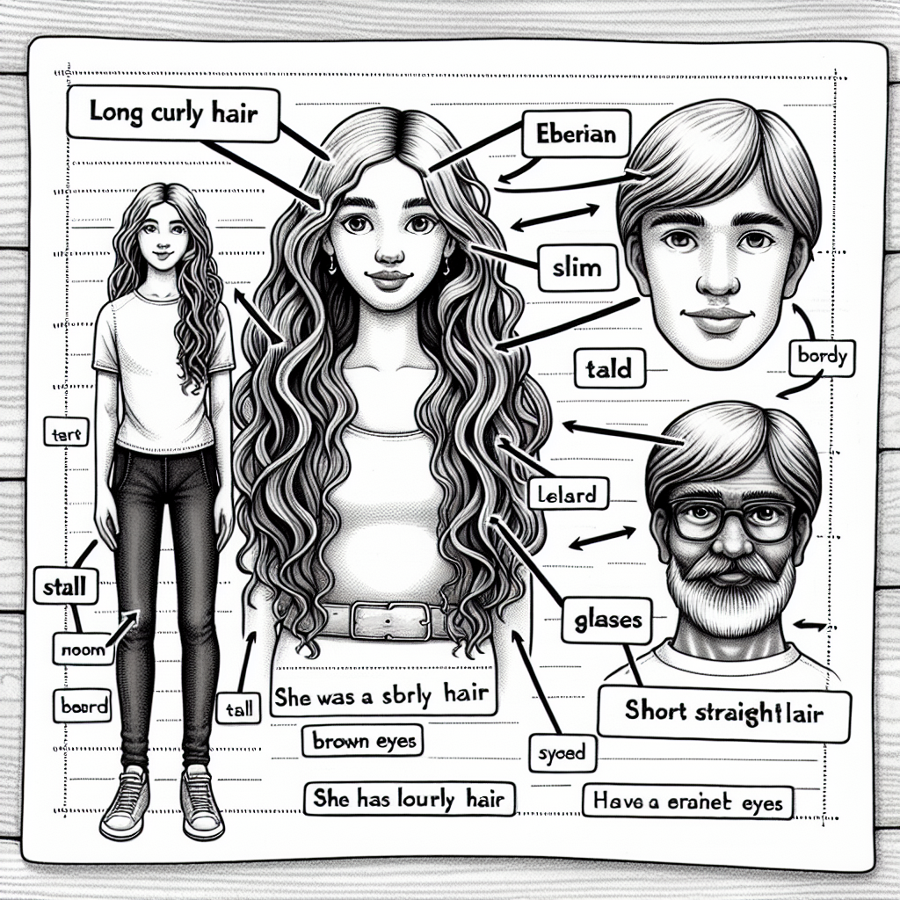
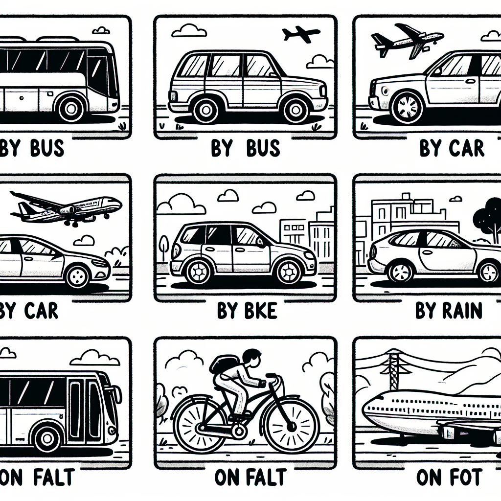
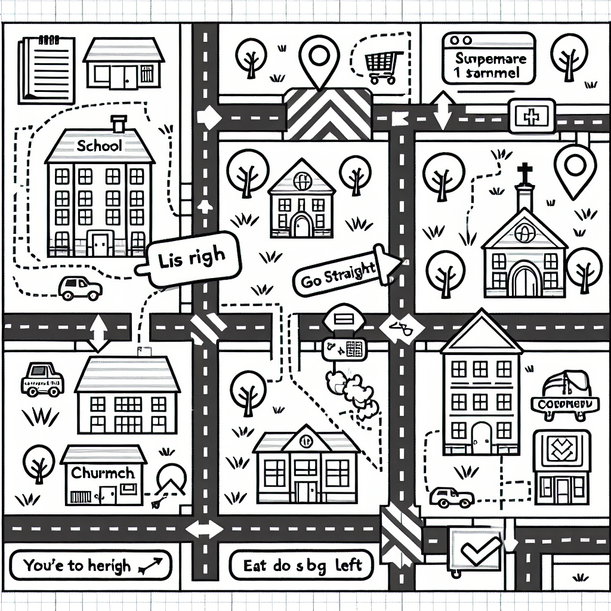
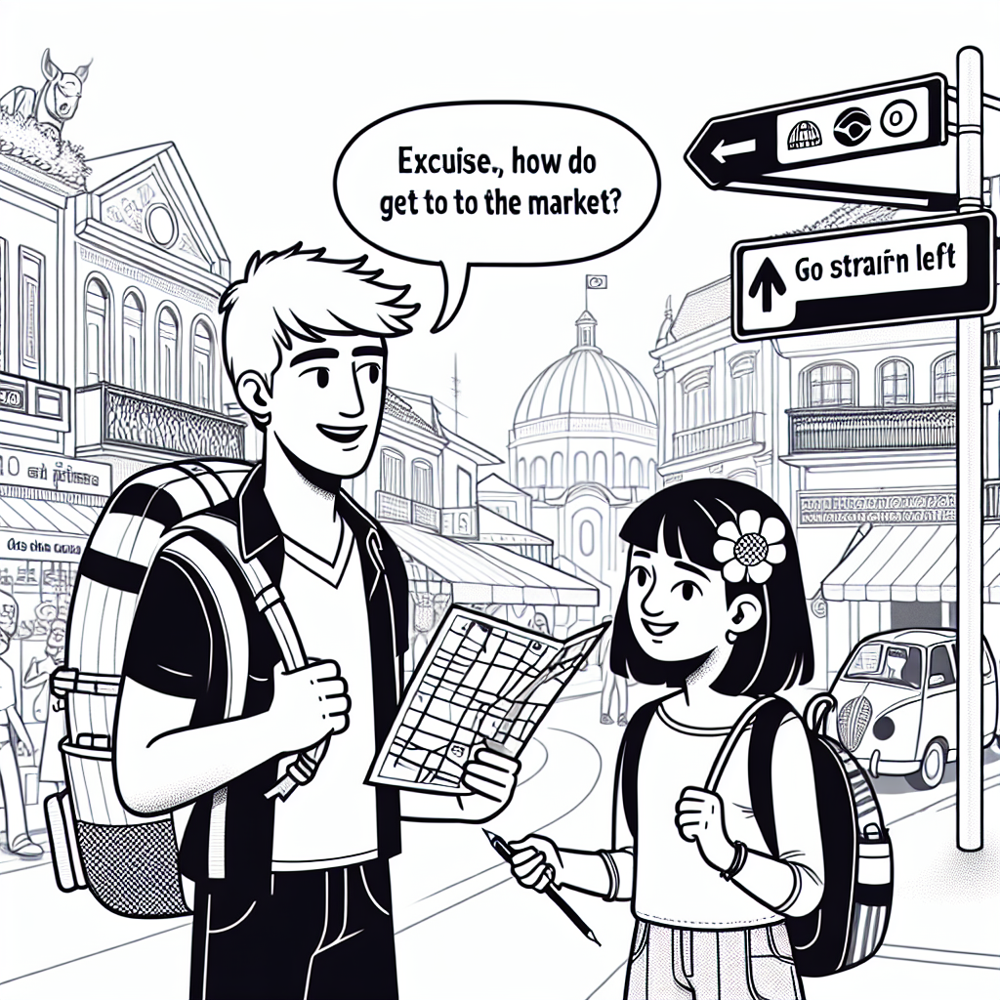

People Descriptions, Transportation & Directions
In this chapter you will learn how to describe people's appearance and personality, talk about different means of transportation, and give and understand directions. By the end, you will be able to describe a friend, say how you travel to different places, and help someone find their way around town.

Describing People — Physical Appearance
We use be + adjective to describe someone's general appearance.
| English | Português | Example |
|---|---|---|
| tall | alto(a) | He is tall. |
| short | baixo(a) | She is short. |
| fat | gordo(a) | The cat is fat. |
| thin / slim | magro(a) / esbelto(a) | She is slim. |
| young | jovem | They are young. |
| old | velho(a) / idoso(a) | My grandfather is old. |
We use have / has + noun to describe specific features like hair, eyes, a beard, etc.
| Feature | Vocabulary | Português |
|---|---|---|
| Hair length | long hair | cabelo comprido |
| short hair | cabelo curto | |
| medium-length hair | cabelo de comprimento médio | |
| Hair type | curly hair | cabelo cacheado |
| straight hair | cabelo liso | |
| wavy hair | cabelo ondulado | |
| Hair colour | blonde hair | cabelo loiro |
| brown hair | cabelo castanho | |
| black hair | cabelo preto | |
| red hair | cabelo ruivo | |
| Eyes | blue eyes | olhos azuis |
| green eyes | olhos verdes | |
| brown eyes | olhos castanhos | |
| Facial hair | a beard | uma barba |
| a moustache | um bigode |
Word order for hair: She has long curly brown hair. (length + type + colour)

Examples in Context
My brother is tall and slim.
Meu irmão é alto e magro.
She has long curly brown hair.
Ela tem cabelo castanho comprido e cacheado.
My father has a beard and brown eyes.
Meu pai tem barba e olhos castanhos.
Ana is short and has short straight black hair.
Ana é baixa e tem cabelo preto, curto e liso.
Common mistakes when describing people:
- Wrong verb: "She has tall" → "She is tall" (use be for adjectives)
- Wrong verb: "He is brown eyes" → "He has brown eyes" (use have for body parts)
- Wrong order: "She has brown long hair" → "She has long brown hair" (length before colour)
Suggested time: 25 minutes
Warm-up: Describe a famous person (e.g., a footballer or singer the students know) and ask students to guess who it is. This introduces the vocabulary naturally.
L1 interference: In Portuguese, "ele tem alto" is sometimes heard colloquially. Stress that in English the distinction between "be" (adjectives) and "have" (nouns) is strict.
Complete each sentence with is or has.
Look at each description in Portuguese and write the English version. Use "is" or "has" correctly.
Ela é alta. Ela tem cabelo comprido e castanho.
She is tall. She has long brown hair.Ele é baixo e gordo. Ele tem olhos azuis.
He is short and fat. He has blue eyes.Meu avô é velho. Ele tem barba e cabelo branco curto.
My grandfather is old. He has a beard and short white hair.A professora é jovem e magra. Ela tem cabelo ruivo e cacheado.
The teacher is young and slim. She has curly red hair.Describing People — Personality & Clothes
Personality Adjectives
| English | Português | Example |
|---|---|---|
| friendly | amigável / simpático(a) | She is very friendly. |
| shy | tímido(a) | He is a bit shy. |
| funny | engraçado(a) | My brother is very funny. |
| serious | sério(a) | The teacher is serious. |
| kind | gentil / bondoso(a) | My grandmother is very kind. |
| lazy | preguiçoso(a) | The cat is really lazy. |
| hardworking | trabalhador(a) / esforçado(a) | Ana is very hardworking. |
We use "is wearing" to describe what someone has on right now. We use "has" for things that are always true (like hair or eyes).
| English | Português |
|---|---|
| a shirt | uma camisa |
| a T-shirt | uma camiseta |
| trousers / pants | calças |
| jeans | jeans / calça jeans |
| a dress | um vestido |
| a skirt | uma saia |
| shoes | sapatos |
| trainers / sneakers | tênis |
| a hat | um chapéu / boné |
| a jacket | uma jaqueta |
Compare:
- "She is wearing a red dress." (right now)
- "She has brown eyes." (always true)
Examples in Context
My best friend is funny and very kind.
Meu melhor amigo é engraçado e muito gentil.
Today she is wearing a blue T-shirt and jeans.
Hoje ela está usando uma camiseta azul e jeans.
Pedro is tall and has short brown hair. He is friendly but a bit shy. He is wearing a white shirt and black trousers.
Pedro é alto e tem cabelo castanho curto. Ele é simpático mas um pouco tímido. Ele está usando uma camisa branca e calças pretas.
Do not confuse "is wearing" with "has":
- "She is wearing a hat." (something she can take off)
- "She has blue eyes." (a permanent feature)
- WRONG: "She has a red dress" (to describe what she wears right now)
Suggested time: 25 minutes
Activity: Ask students to stand up and describe what a classmate is wearing without saying who. The class guesses who they are describing. This practises "is wearing" naturally.
L1 interference: In Portuguese, "usar" covers both "wear" and "use". Students may say "She uses a dress" instead of "She is wearing a dress".
Match each description with the correct personality adjective.
Complete each sentence with is wearing or has.
Means of Transportation
To talk about transportation, we use "by" + vehicle (without "a" or "the") or "on foot" for walking.
Question: How do you go to school / work / the city centre?
Answer: I go to school by bus. / I go on foot.
Means of Transportation
| English | Português | Example |
|---|---|---|
| by bus | de ônibus | I go to school by bus. |
| by car | de carro | My father goes to work by car. |
| by bike / by bicycle | de bicicleta | She goes to the park by bike. |
| by train | de trem | We go to São Paulo by train. |
| by plane | de avião | They travel to Rio by plane. |
| by subway / by metro | de metrô | He goes to the centre by metro. |
| on foot | a pé | I go to school on foot. |
| by taxi | de táxi | We go to the airport by taxi. |

Important rules about "by" + transport:
- Use "by" (NOT "of" or "in"): "by bus" (NOT "of bus")
- Do NOT use "a" or "the" after "by": "by car" (NOT "by a car" or "by the car")
- The exception is walking: "on foot" (NOT "by foot")
Suggested time: 20 minutes
Activity: Do a quick class survey: "How do you come to school?" Write a tally on the board (by bus: IIII, on foot: III, etc.) and practise the responses as a group.
L1 interference: Portuguese uses "de" for all transport (de ônibus, de carro), which leads students to say "of bus" or "of car". Emphasise that English uses "by". Also watch for "by foot" instead of "on foot".
Complete each sentence with by or on.
Answer each question in a complete sentence. Use the transport in brackets.
How does Ana go to school? (bus)
Ana goes to school by bus.How do you go to the supermarket? (on foot)
I go to the supermarket on foot.How does your family travel to São Paulo? (car)
My family travels to São Paulo by car.How do tourists go from Guarulhos Airport to the city centre? (taxi)
Tourists go from Guarulhos Airport to the city centre by taxi.Giving & Understanding Directions
When someone asks "Excuse me, how do I get to...?" or "Where is the...?", use these phrases:
| English | Português |
|---|---|
| Go straight (ahead). | Siga em frente. |
| Turn left. | Vire à esquerda. |
| Turn right. | Vire à direita. |
| It's on the left. | É/Fica à esquerda. |
| It's on the right. | É/Fica à direita. |
| Cross the street. | Atravesse a rua. |
| Take the first turning on the left. | Pegue a primeira rua à esquerda. |
| Take the second turning on the right. | Pegue a segunda rua à direita. |
Use these prepositions to say where something is located:
| English | Português | Example |
|---|---|---|
| next to | ao lado de | The bank is next to the supermarket. |
| between | entre | The school is between the park and the church. |
| opposite | em frente a / do outro lado | The pharmacy is opposite the hospital. |
| in front of | na frente de | There is a bus stop in front of the school. |
| behind | atrás de | The car park is behind the shopping centre. |
| on the corner (of) | na esquina (de) | The café is on the corner of Rua XV. |

Examples in Context
Excuse me, how do I get to the hospital?
Com licença, como eu chego ao hospital?
Go straight and turn right at the traffic lights. The hospital is on the left, next to the pharmacy.
Siga em frente e vire à direita no semáforo. O hospital fica à esquerda, ao lado da farmácia.
The supermarket is between the bank and the bakery, opposite the park.
O supermercado fica entre o banco e a padaria, em frente ao parque.
Cross the street and take the second turning on the left. The school is on the right.
Atravesse a rua e pegue a segunda rua à esquerda. A escola fica à direita.
Do not confuse these similar phrases:
- "opposite" = on the other side of the street (em frente / do outro lado)
- "in front of" = directly before it, same side (na frente de)
- The school is opposite the park. (across the street)
- The bus stop is in front of the school. (right at the school entrance)
Suggested time: 25 minutes
Activity: Draw a simple map of the school's neighbourhood on the board. Ask students to give directions from the school to familiar places (the bus stop, the bakery, etc.).
L1 interference: Portuguese "em frente" can mean both "opposite" and "in front of", which causes confusion. Use diagrams to make the distinction clear.
Complete each sentence with one of these words: straight, left, right, cross, next to, between, opposite, behind.
Translate each direction from Portuguese to English.
Siga em frente e vire à esquerda.
Go straight and turn left.A escola fica ao lado do parque.
The school is next to the park.Atravesse a rua. O banco fica à direita.
Cross the street. The bank is on the right.Pegue a primeira rua à direita. O hospital fica entre a farmácia e o restaurante.
Take the first turning on the right. The hospital is between the pharmacy and the restaurant.Dialogue, Reading & Writing

Dialogue: Asking for Directions
Suggested time: 10 minutes
Activity: Have students read the dialogue in pairs. Then ask them to identify all the direction phrases (go straight, turn left, next to, etc.) and underline them.
Read the dialogue above and write T (True) or F (False).
Reading: My Best Friend
My best friend is called Fernanda. She is 15 years old and she lives near my house in Belo Horizonte. We go to the same school — Escola Incluir.
Fernanda is tall and slim. She has long straight black hair and brown eyes. She is very pretty. She usually wears jeans, a T-shirt, and white trainers. Today she is wearing a blue dress because we have a school party.
Fernanda is very friendly and funny. She always makes me laugh! She is also hardworking — she studies every day and always gets good marks. But she is a bit shy with new people. When she meets someone new, she doesn't talk much at first.
Fernanda and I go to school together every day. We walk because the school is close — only about five minutes on foot. After school, we sometimes take the bus to the city centre to go shopping or visit the park. On Saturdays, Fernanda goes to her grandmother's house by car with her family. Her grandmother lives in Contagem, a city next to Belo Horizonte.
I really love my friend Fernanda. She is kind, funny, and always there when I need her!
Suggested time: 20 minutes (reading + exercises 10-11)
Pre-reading: Ask students to think about their best friend and what words they would use to describe them. Write suggestions on the board in English.
Reading strategy: First reading for general understanding, second reading to find specific details for the exercises.
Read the text about Fernanda and answer the questions in complete sentences.
What does Fernanda look like? (physical appearance)
She is tall and slim. She has long straight black hair and brown eyes.What is Fernanda wearing today? Why?
She is wearing a blue dress because they have a school party.What is Fernanda's personality like?
She is friendly, funny, hardworking, and a bit shy with new people.How do Juliana and Fernanda go to school?
They walk / They go on foot.How do they sometimes go to the city centre after school?
They sometimes take the bus.How does Fernanda go to her grandmother's house? Where does her grandmother live?
She goes by car with her family. Her grandmother lives in Contagem.Write a short text (6-8 sentences) describing a friend or family member. Include:
- Their name and age
- Physical appearance (use "is" + adjective and "has" + noun)
- What they are wearing today (use "is wearing")
- Their personality (use at least 2 personality adjectives)
- How they go to school or work (use "by" or "on foot")
Interview a classmate using these questions. Write their answers.
What colour are your eyes?
What is your hair like? (long/short, curly/straight, colour)
What are you wearing today?
How do you go to school?
Are you shy or friendly? Describe your personality.
How do you go from your house to the nearest supermarket?
Suggested time: 25 minutes (15 for writing, 10 for interview)
Assessment criteria for Exercise 11:
- Correct use of "is" + adjective vs "has" + noun
- Correct use of "is wearing" for current clothing
- At least 2 personality adjectives
- Correct use of "by" + transport or "on foot"
- Clear paragraph structure (6-8 sentences)
Exercise 12: After the interview, each student reports to the class using he/she forms: "Maria is tall and has brown eyes. She is wearing a blue shirt today. She goes to school by bus." This is excellent practice for third-person descriptions.
Chapter 7 - Answer Key
Exercise 1: Complete with "is" or "has"
Exercise 2: Write a Description
Exercise 3: Match the Personality Adjective
Exercise 4: Complete with "is wearing" or "has"
Exercise 5: Complete with "by" or "on"
Exercise 6: How Do You Go?
Exercise 7: Complete the Directions
Exercise 8: Translate the Directions
Exercise 9: True or False
Exercise 10: Answer the Questions
Exercise 11: Write About a Friend or Family Member
Answers will vary. Check for correct use of "is" + adjective, "has" + noun, "is wearing" for current clothing, at least 2 personality adjectives, correct "by" + transport or "on foot", and 6-8 complete sentences.
Exercise 12: Interview a Classmate
Answers will vary. Check that students answered in complete sentences. When reporting, verify correct use of third-person descriptions (She is tall. She has brown eyes. She is wearing a blue shirt. She goes to school by bus.).